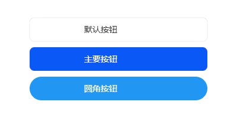
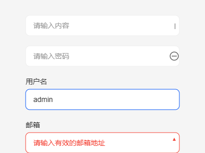
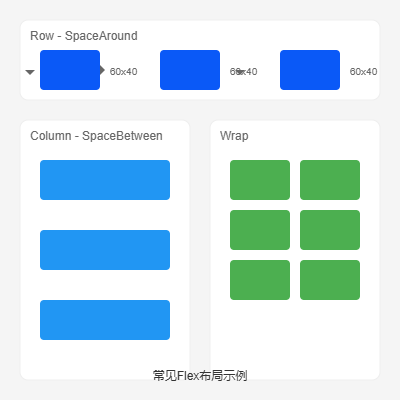
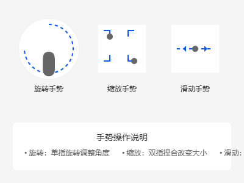
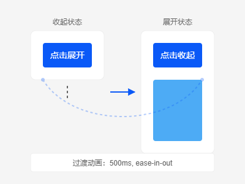
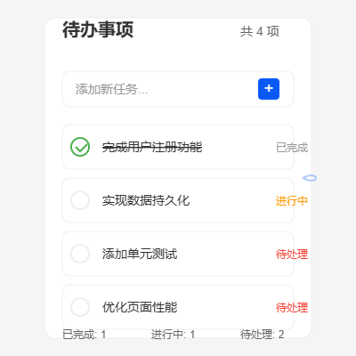

基础组件示例
展示ArkTS常用基础组件的使用方法和最佳实践。
按钮组件

@Component
struct ButtonExample {
build() {
Column({ space: 20 }) {
Button('默认按钮')
.width('80%')
.height(40)
Button('主要按钮')
.width('80%')
.height(40)
.backgroundColor('#0A59F7')
Button('圆角按钮')
.width('80%')
.height(40)
.borderRadius(20)
}
.width('100%')
.padding(20)
}
}输入组件

@Component
struct InputExample {
@State text: string = ''
build() {
Column({ space: 20 }) {
TextInput({ placeholder: '请输入内容' })
.width('80%')
.height(40)
.onChange((value: string) => {
this.text = value
})
Text(`输入内容：${this.text}`)
.fontSize(16)
}
.width('100%')
.padding(20)
}
}布局示例
展示ArkTS中常用的布局方式和响应式设计实现。
Flex布局

@Component
struct FlexLayoutExample {
build() {
Flex({
direction: FlexDirection.Row,
wrap: FlexWrap.Wrap,
justifyContent: FlexAlign.SpaceAround
}) {
ForEach([1, 2, 3, 4], (item) => {
Column()
.width(100)
.height(100)
.backgroundColor('#0A59F7')
.margin(10)
})
}
.width('100%')
.padding(20)
}
}交互示例
展示用户交互相关的功能实现，如手势识别、事件处理等。
手势识别

@Component
struct GestureExample {
@State rotation: number = 0
build() {
Column() {
Image($r('app.media.logo'))
.width(200)
.height(200)
.rotate({ angle: this.rotation })
.gesture(
PanGesture()
.onActionUpdate((event: GestureEvent) => {
this.rotation += event.angle
})
)
}
.width('100%')
.height('100%')
.justifyContent(FlexAlign.Center)
}
}动画示例
展示各种动画效果的实现方式。
过渡动画

@Component
struct TransitionExample {
@State isExpanded: boolean = false
build() {
Column() {
Button('点击展开')
.onClick(() => {
animateTo({ duration: 500 }, () => {
this.isExpanded = !this.isExpanded
})
})
Column()
.width('100%')
.height(this.isExpanded ? 200 : 0)
.backgroundColor('#0A59F7')
.transition('height')
}
.padding(20)
}
}项目实战
完整的项目示例，展示实际应用中的最佳实践。
待办事项应用

功能特点
- 任务的添加、删除和编辑
- 任务状态管理（待处理、进行中、已完成）
- 任务优先级设置
- 任务分类管理
- 数据持久化存储
- 任务统计和进度展示
技术要点
- 状态管理：使用@State装饰器管理组件状态
- 数据持久化：使用首选项存储任务数据
- 组件复用：封装通用的任务项组件
- 动画效果：实现平滑的状态切换动画
// 任务数据模型
class TodoItem {
id: number
title: string
status: 'pending' | 'inProgress' | 'completed'
priority: 'low' | 'medium' | 'high'
createTime: number
constructor(title: string) {
this.id = Date.now()
this.title = title
this.status = 'pending'
this.priority = 'medium'
this.createTime = Date.now()
}
}
// 任务项组件
@Component
struct TodoItemComponent {
@ObjectLink item: TodoItem
@Link onStatusChange: (id: number, status: string) => void
@Link onDelete: (id: number) => void
build() {
Row() {
Row({ space: 10 }) {
Checkbox()
.select(this.item.status === 'completed')
.onChange((value) => {
this.onStatusChange(this.item.id,
value ? 'completed' : 'pending')
})
Text(this.item.title)
.fontSize(16)
.decoration({ type: this.item.status === 'completed' ?
TextDecorationType.LineThrough : TextDecorationType.None })
}
.layoutWeight(1)
Image($r('app.media.delete'))
.width(24)
.height(24)
.onClick(() => this.onDelete(this.item.id))
}
.width('100%')
.height(50)
.padding(10)
.backgroundColor(Color.White)
.borderRadius(8)
}
}
// 主页面组件
@Component
struct TodoListPage {
@State todoItems: TodoItem[] = []
@State newTaskTitle: string = ''
aboutToAppear() {
// 从持久化存储加载数据
this.loadTodoItems()
}
async loadTodoItems() {
try {
const storage = await preferences.getPreferences(globalThis.context, 'todo_storage')
const items = await storage.get('items', '[]')
this.todoItems = JSON.parse(items)
} catch (err) {
console.error('Failed to load todo items:', err)
}
}
async saveTodoItems() {
try {
const storage = await preferences.getPreferences(globalThis.context, 'todo_storage')
await storage.put('items', JSON.stringify(this.todoItems))
await storage.flush()
} catch (err) {
console.error('Failed to save todo items:', err)
}
}
build() {
Column() {
// 顶部标题
Text('待办事项')
.fontSize(24)
.fontWeight(FontWeight.Bold)
.margin({ top: 20, bottom: 20 })
// 添加任务输入框
Row({ space: 10 }) {
TextInput({ placeholder: '添加新任务...' })
.width('80%')
.height(40)
.onChange((value) => {
this.newTaskTitle = value
})
Button('+')
.width(40)
.height(40)
.onClick(() => {
if (this.newTaskTitle.trim()) {
this.todoItems.push(new TodoItem(this.newTaskTitle))
this.newTaskTitle = ''
this.saveTodoItems()
}
})
}
.padding(10)
.width('100%')
// 任务列表
List() {
ForEach(this.todoItems, (item) => {
ListItem() {
TodoItemComponent({
item: item,
onStatusChange: (id, status) => {
const index = this.todoItems.findIndex(item => item.id === id)
if (index !== -1) {
this.todoItems[index].status = status
this.saveTodoItems()
}
},
onDelete: (id) => {
this.todoItems = this.todoItems.filter(item => item.id !== id)
this.saveTodoItems()
}
})
}
.margin({ bottom: 10 })
})
}
.width('100%')
.layoutWeight(1)
.padding(10)
// 底部统计
Row() {
Text(`总计: ${this.todoItems.length}`)
Text(`已完成: ${this.todoItems.filter(item =>
item.status === 'completed').length}`)
Text(`待处理: ${this.todoItems.filter(item =>
item.status === 'pending').length}`)
}
.width('100%')
.justifyContent(FlexAlign.SpaceAround)
.padding(10)
.backgroundColor('#f5f5f5')
}
.width('100%')
.height('100%')
.backgroundColor('#f0f0f0')
}
}